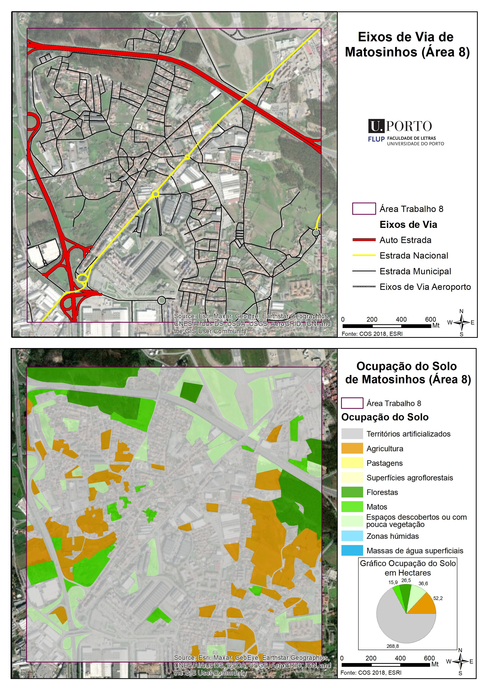
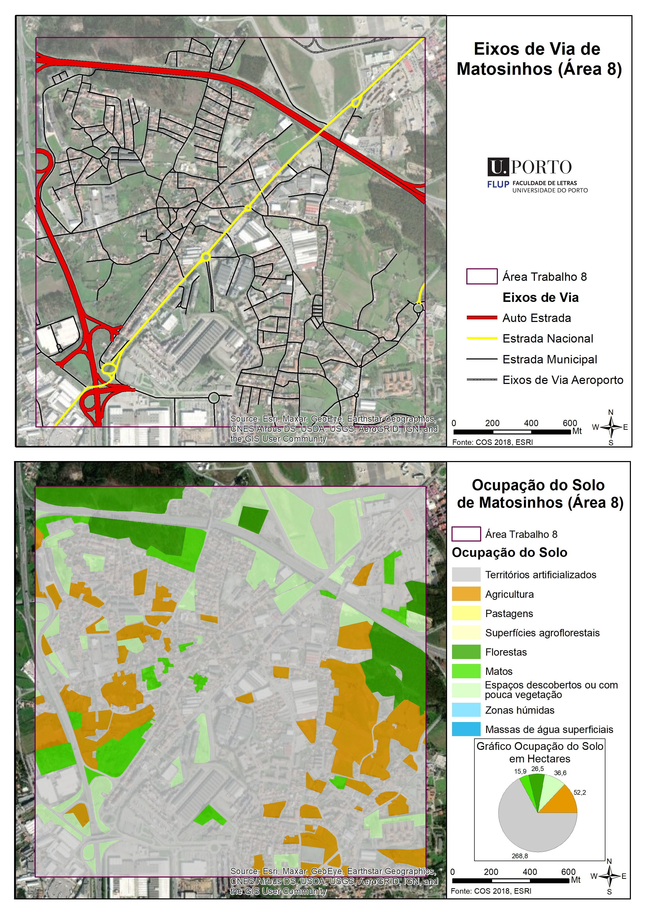

Experiência profissional
Iniciei o meu percurso laboral na mesma altura em que iniciei a licenciatura em
Geografia, no ano de 2014. Trabalhei numa conhecida loja de roupa jovem, mas sempre o
considerei temporário. Quando terminei a licenciatura, iniciei um estágio como geógrafa na
Câmara Municipal da Maia. Passados 6 meses, assinei o meu primeiro contrato com a
instituição, que permanece até hoje. Este é sem dúvida um desafio diário, mas que me
permite vivenciar novas experiências e conhecer novas pessoas.
Clique aqui para descarregar o meu cv.
para descarregar o meu cv.

Certificado de licenciatura
Certificado ENIIG
Certificado CP-UDP
Deteção remota e monitorização da ocupação
do solo para a Administração Pública local
Cutting Crime Impact - Framing a European
approach to security policy and practice
Clique aqui
para descarregar o meu cv.
Formações
Certificado de licenciatura
Certificado ENIIG
Certificado CP-UDP
Deteção remota e monitorização da ocupação
do solo para a Administração Pública local
Cutting Crime Impact - Framing a European
approach to security policy and practice


 
